Contents
Observe noise distributioin in one channel
Noise Data has been acquired on a phantom (RF off, ADC ON)
Size of the noise dataset is : 16384 x 4 coils
Data are separated in real, imaginary and magnitude.
close all;clear all; load('../data/noise_data.mat'); noise_r=real(noise); noise_i=imag(noise); noise_m=abs(noise);
Distribution (histogram) of real/imaginary part of noise is fitted using builtin matlab function : fitdist() and assuming it is a normal distribution :
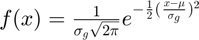
LimMin=max(noise_r(:,1)); % limit the range of the plot % Plot the distribution of noise real part. figure;h1=histogram(noise_r(:,1),50);title('real part of noise'); xlim([-LimMin LimMin]) % Estimate the standard deviation of noise (assuming it is a % gaussian/normal distribution) pd_r = fitdist(noise_r(:,1),'Normal'); % Plot the fitted distribution and visualy compare. x_values = pd_r.mu-4*pd_r.sigma:8*pd_r.sigma/1000:pd_r.mu+4*pd_r.sigma; %y = pdf(pd,x_values); % integrated matlab function to create a normal distribution y=1/(pd_r.sigma*sqrt(2*pi))*exp(-1/2*((x_values-pd_r.mu)/pd_r.sigma).^2); % own implementation of normal distribution y=y/max(y); y=y*max(h1.Values); hold on; plot(x_values,y,'LineWidth',2)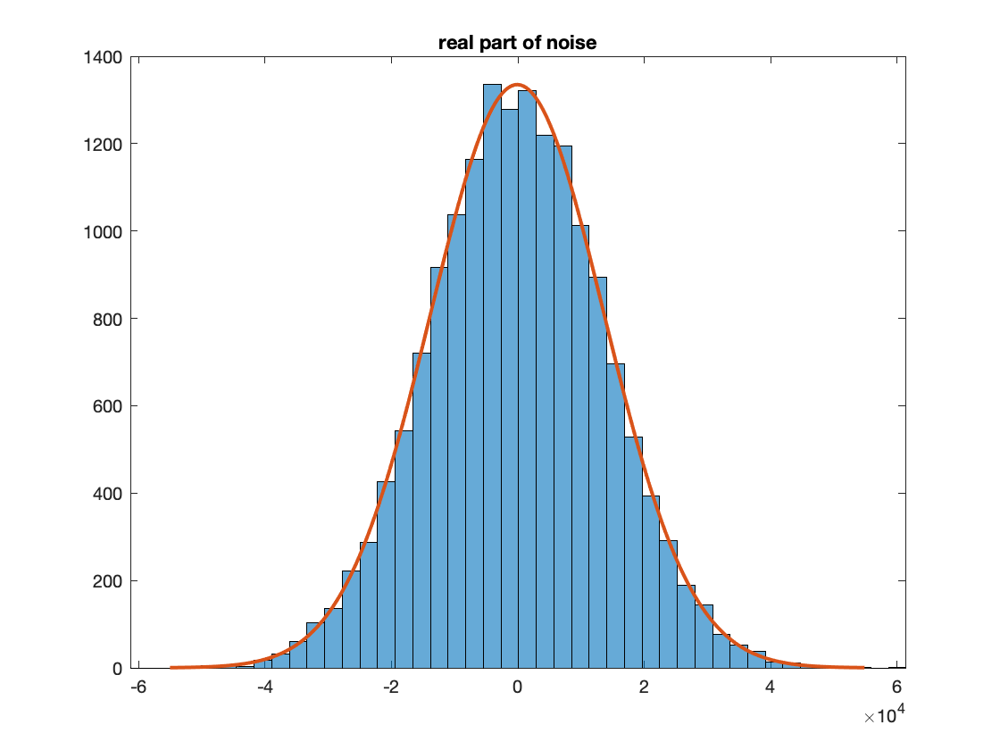
Real part of the complex data seems to follow a gaussian distribution with a standard deviation 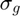
fprintf(1,'Standard deviation of real part: %f\n',pd_r.sigma);
Standard deviation of real part: 13740.745065
Same observation for imaginary part
figure;h2=histogram(noise_i(:,1),50);title('imaginary part of noise'); xlim([-LimMin LimMin]); pd_i = fitdist(noise_i(:,1),'Normal'); x_values = pd_i.mu-4*pd_i.sigma:8*pd_i.sigma/1000:pd_i.mu+4*pd_i.sigma; y=1/(pd_i.sigma*sqrt(2*pi))*exp(-1/2*((x_values-pd_i.mu)/pd_i.sigma).^2); y=y/max(y); y=y*max(h2.Values); hold on plot(x_values,y,'LineWidth',2)
Imaginary part of the complex data also seems to follow a gaussian distribution with a standard deviation which the "same" as the one measure on real part of noise
fprintf(1,'Standard deviation of imaginary part: %f\n',pd_i.sigma);
Standard deviation of imaginary part: 13659.701548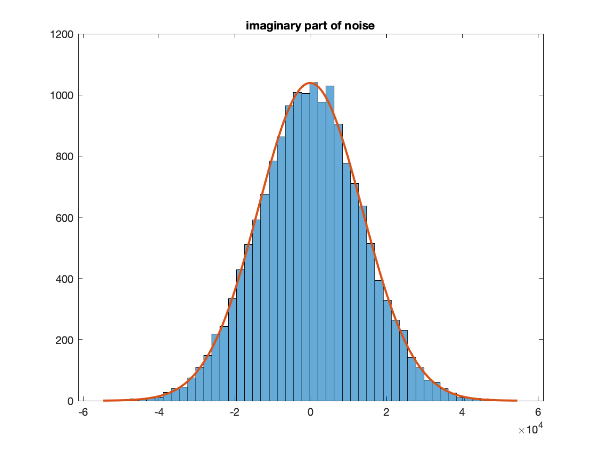
But what happens to the distribution for the magnitude noise ?
figure;h3=histogram(noise_m,50);title('Magnitude noise');
xlim([-LimMin LimMin]);
The distribution is not anymore gaussian
Theoritical distribution of magnitude noise
This is not a gaussian distribution indeed it is a Rayleigh distribution when a coil with one channel is used : 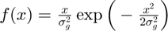
Mathematical description :? Cardenas Blanco et Al
Ideal magnitude signal / pixel intensity is : 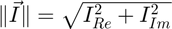
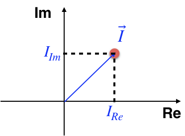
With noise we add and incertitude of the position into the complex plan : 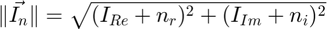
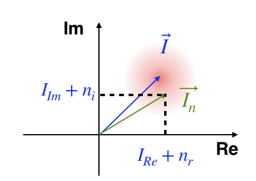
Distribution of signal is equal to the probability of occurence of an intensity value at a distance 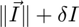
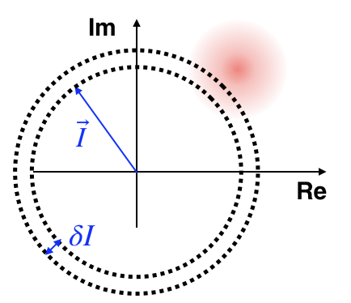
If the Signal-to-Noise Ratio is $ +\infty$, curvature is negligeable and the integral of the function (the distribution) in function of the Intensity of the signal 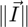 is a gaussian
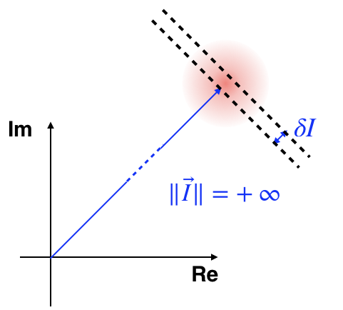
When decrease, the curvature will modify this gaussian distribution.
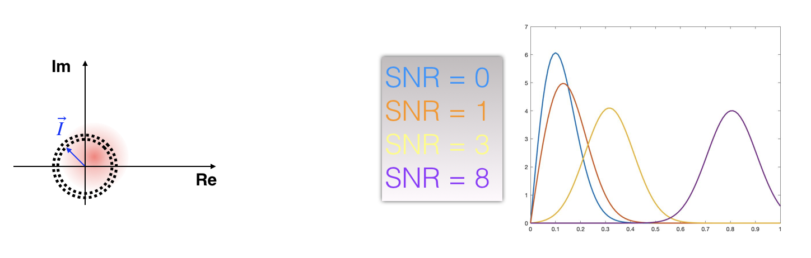
The distribution is a Rician distribution :
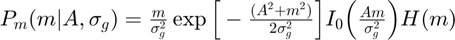 where 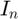 is the noisy signal measured, 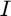 is the "real" signal and $I_0(x) is the first order modified Bessel function.
This distribution can be approximate to a gaussian distribution when 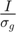 is high :
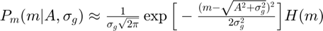
and a Rayleigh distribution when SNR = 0 :
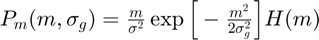
with :
- 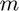 : the magnitude intensity of pixel measured
- 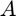 : the magnitude of the true noiseless pixel signal
Properties of Rayleigh distribution
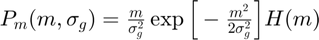
Standard deviation of a Rayleigh distribution 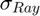 is linked to the gaussian standard deviation of noise on the real/imaginary part of signal :
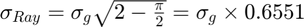
The mean value of magnitude noise signal is also linked to :
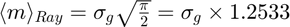
Verification that the magnitude noise follow a Rayleigh distribution
fprintf(1,'Standard deviation of magnitude part: %f\n',std(noise_m(:,1)));
Standard deviation of magnitude part: 9021.903598
The standard deviation on magnitude data are underestimate in comparison to the noise deviation measured on real/imaginary noise.
We recover the same value of standard deviation of gaussian noise with the previous equation :
fprintf(1,'Standard deviation of gaussian noise on real noise: %f\n',std(noise_r(:,1))); fprintf(1,'Standard deviation of gaussian noise on imag noise: %f\n',std(noise_i(:,1))); fprintf(1,'Standard deviation of gaussian noise with mean magnitude noise : %f\n',mean(noise_m(:,1))/1.2533); fprintf(1,'Standard deviation of gaussian noise with standard deviation of magnitude noise : %f\n',std(noise_m(:,1))/0.6551);
Standard deviation of gaussian noise on real noise: 13740.745065 Standard deviation of gaussian noise on imag noise: 13659.701548 Standard deviation of gaussian noise with mean magnitude noise : 13681.336090 Standard deviation of gaussian noise with standard deviation of magnitude noise : 13771.796059
We can use the gaussian standard deviation calculated in order to fit the distribution and measure the RMSE
pd.sigma = mean(noise_m(:,1))/1.2533; figure; h3=histogram(noise_m,50);title('Magnitude noise'); xlim([-LimMin LimMin]); x=0:LimMin/1000:LimMin; y=x./pd.sigma^2.*exp(-x.^2/(2*pd.sigma^2)); y=y/max(y); y=y*max(h3.Values); hold on plot(x,y,'LineWidth',2)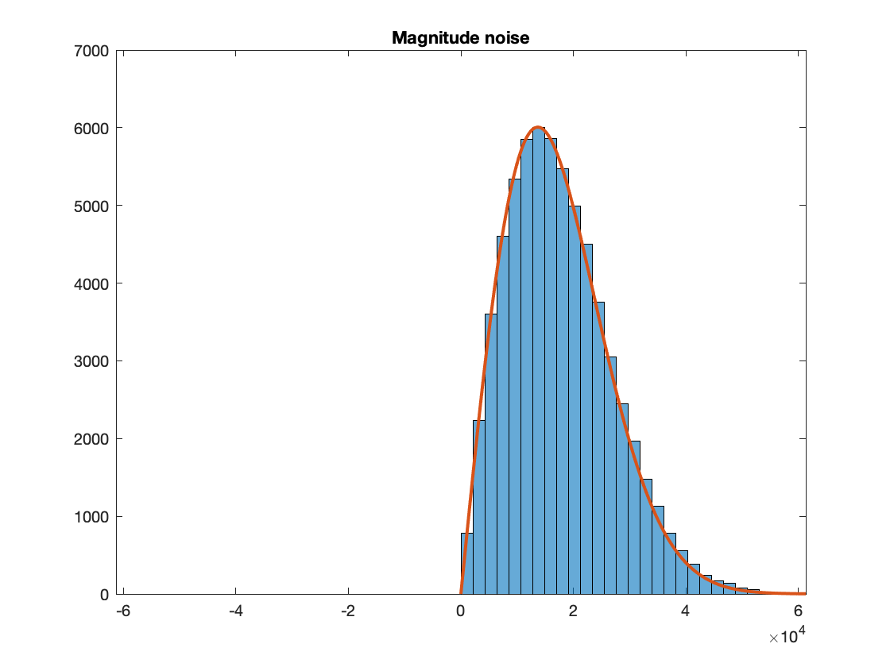
Simulate the rician distribution
for multiple value for SNR = [0 1 3 8]
SNR= [0 1 3 8]; x_values=0:0.01:1.4; %x_values=-1:0.01:1; pd.sigma = 0.1; pd.mu=0; figure;hold on; for i=1:length(SNR) A=SNR(i)*pd.sigma; yfilt=ones(length(x_values),1); yfilt(x_values<0)=0; y=x_values./((pd.sigma)^2).*exp(-(A^2+x_values.^2)./(2*(pd.sigma)^2)).*besseli(0,A.*x_values/(pd.sigma^2)).*yfilt'; %y2=x_values./pd.sigma^2.*exp(-(A^2+x_values.^2)/(2*pd.sigma^2)).*besseli(0,A.*x_values/ y_gauss=1/(pd.sigma*sqrt(2*pi))*exp(-1/2*((x_values-A)/pd.sigma).^2); plot(x_values,y,'LineWidth',2); %hold on; plot(x_values,y_gauss); labels{i} = ['SNR = ' num2str(SNR(i))]; end legend(labels)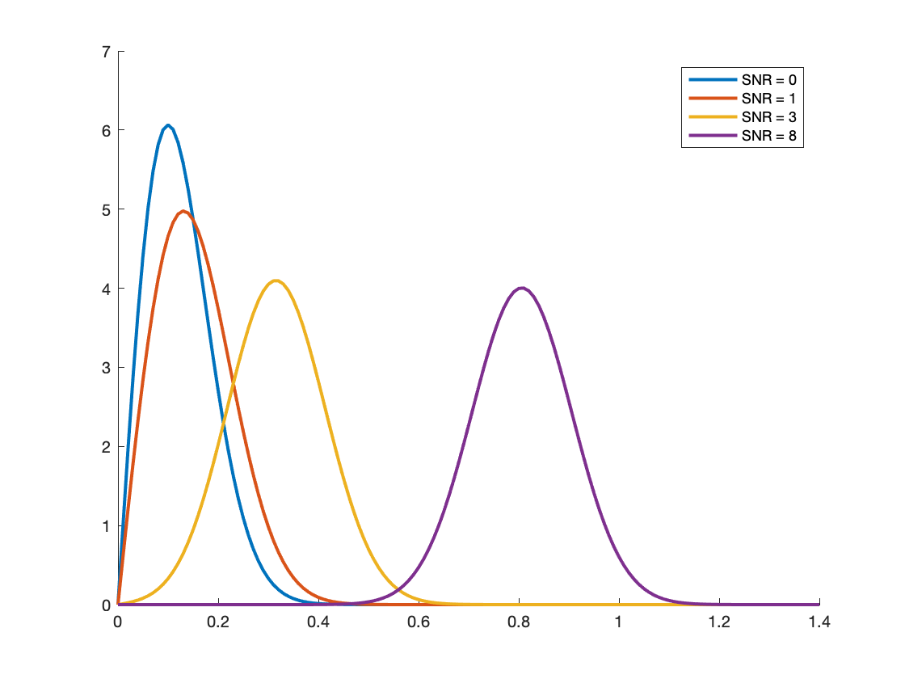
Noise distribution with multiple elements array coil
Same theoritical analysis can be performed when multiple channel are used either with a sum of square reconstruction or a sense-based coil combinaison reconstruction.
Mathematical description can be find in ?Constantinides et Al
The noise distribution of L-elements array coil follow a non-central chi distribution in function of the true noiseless signal 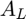 :
$P_m(m_L,|A_L,\sigma_g)=\frac{A_L}{\sigma_g^2} \Big(\frac{m_L}{A_L}\Big)^L \exp \Big[-\frac{(A_L^2+m_L^2)}{2 \sigma_g^2} \Big]I_{L-1} \Big(\frac{m_L \ A_L}{\sigma_g^2}\Big)H(m_L)%
with :
- 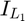 : modified Bessel function of the first kind of order (L-1)
- : sum of square of signal
- 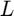 : number of channel
For the case of SNR = 0, we can perform a Taylor expansion of the bessel function :
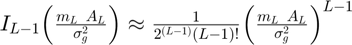
which leads to the noise distribution :
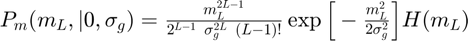
Properties of the non-central chi distribution
The gaussian standard deviation of noise can be estimated from magnitude images with the following equation :
- 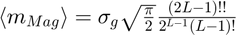
- 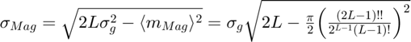
Verification that the magnitude noise follow a non-central chi distribution
pd.sigma = std(noise_i(:,1)); LimMin = 100000; figure; A=0; for i=1:4 dataMagMc=squeeze(sqrt(sum(abs(double(noise_m(:,1:i))).^2,2))); subplot(4,1,i);h1=histogram(dataMagMc,50);title(['noise for ' num2str(i) ' channels']); xlim([-LimMin LimMin]); x=0:LimMin/1000:LimMin; % Taylor y=(x.^(2*i-1))./(2^(i-1)*pd.sigma^(2*i)*factorial(i-1)).*exp(-(x.^2)./(2*pd.sigma^2)); y=y/max(y); y=y*max(h1.Values); hold on plot(x,y,'--','LineWidth',2); end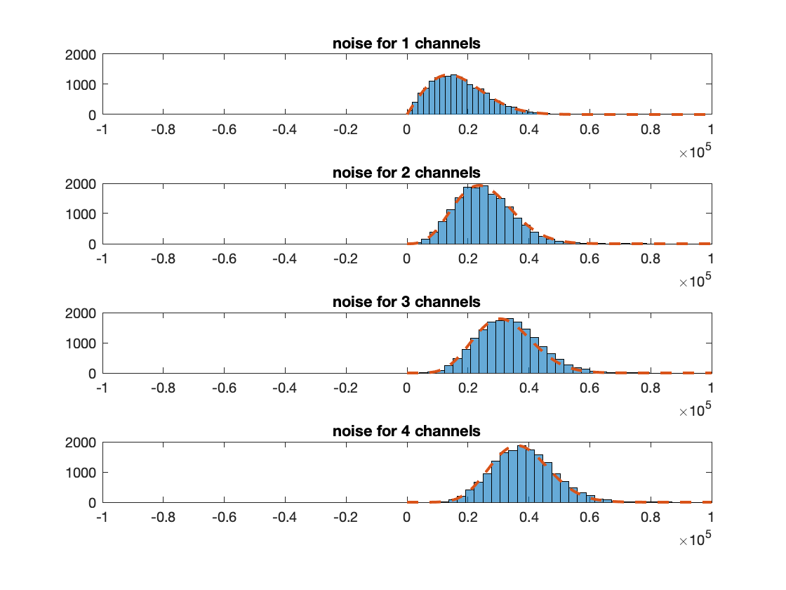
Fit is not as good as what we saw with only one channel
RMSE = 0; clear Idx for i=1:h1.NumBins %find center of histogram bin xpos(i)=(h1.BinEdges(i)+h1.BinWidth); % find corresponding x2pos [a,b]=find(x>=xpos(i),1,'first'); if(isempty(b)) Idx(i)=length(x); else Idx(i)=b; end RMSE = RMSE+abs(h1.Values(i)-y(Idx(i)))^2; end RMSE=sqrt(RMSE); disp(['RMSE = ' num2str(RMSE)]);
RMSE = 798.5618
This is due to the noise correlation between the different channel.
We can correct that by noise pre-whitening
noise=noise';
Nsamples=size(noise,2);
Psi = (1/(Nsamples-1))*(noise * noise');
figure;imagesc(abs(Psi));title('noise correlation matrix');
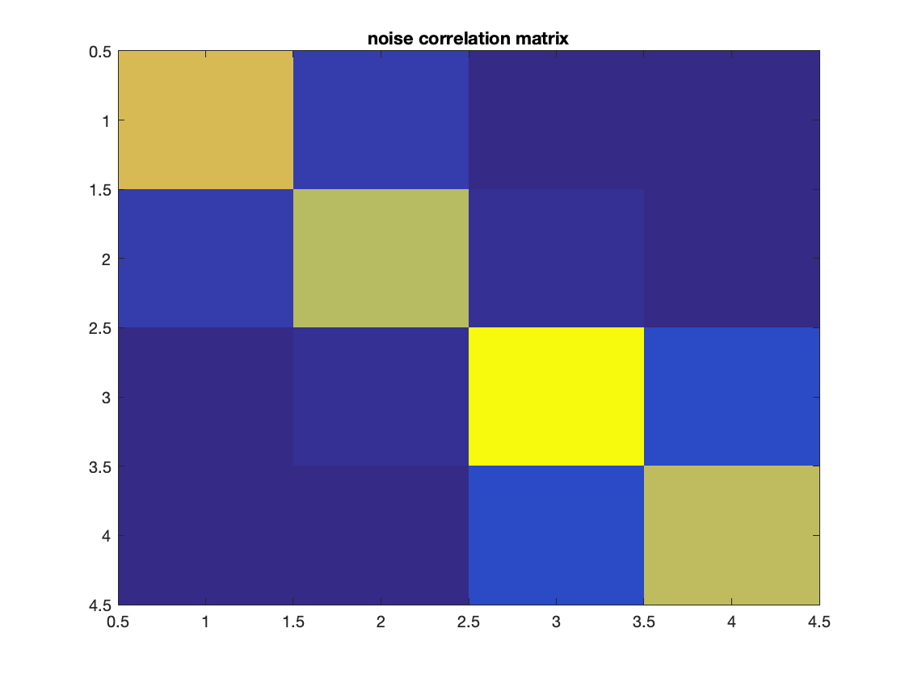 L=chol(Psi,'lower');
L_inv=inv(L);
noise=L_inv*noise;
noise_r_p=real(noise)';
noise_i_p=imag(noise)';
noise_m_p=abs(noise)';
Now refit the distribution with noise pre-whitening data
pd.sigma = std(noise_i_p(:,1)); LimMin = max(noise_i_p(:)); figure; A=0; for i=1:4 dataMagMc=squeeze(sqrt(sum(abs(double(noise_m_p(:,1:i))).^2,2))); subplot(4,1,i);h1=histogram(dataMagMc,50);title(['noise for ' num2str(i) ' channels']); xlim([-LimMin LimMin]); x=0:LimMin/1000:LimMin; % Taylor y=(x.^(2*i-1))./(2^(i-1)*pd.sigma^(2*i)*factorial(i-1)).*exp(-(x.^2)./(2*pd.sigma^2)); y=y/max(y); y=y*max(h1.Values); hold on plot(x,y,'--','LineWidth',2); end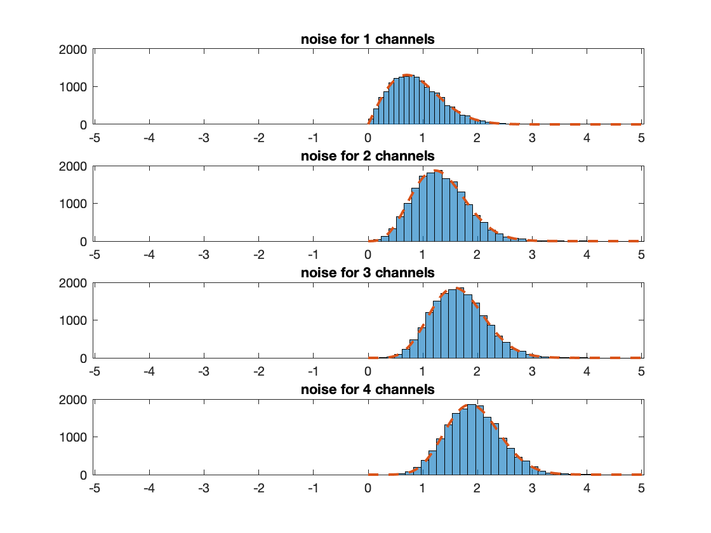
Now the fit of the noise distribution is really good
RMSE = 0; clear Idx for i=1:h1.NumBins %find center of histogram bin xpos(i)=(h1.BinEdges(i)+h1.BinWidth); % find corresponding x2pos [a,b]=find(x>=xpos(i),1,'first'); if(isempty(b)) Idx(i)=length(x); else Idx(i)=b; end RMSE = RMSE+abs(h1.Values(i)-y(Idx(i)))^2; end RMSE=sqrt(RMSE); disp(['RMSE = ' num2str(RMSE)]);
RMSE = 532.3828
How to measure SNR (ROI method)
If you want to measure the SNR with a Region of interest (ROI) based method on magnitude image you should calculate the ratio :
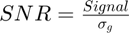
- Correct the noise correlation between channels (noise pre-whitening)
- Take into account the number of coil used
- Measure the signal with a ROI
- Put a ROI in a signal/artefact free zone and measure the standard deviation 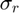
- Calculate the gaussian standard deviation with the following equation :
or
Conclusion
It is important to understand how noise work in MRI for :
- Comparison of CNR / SNR (optimisation protocol, sequence...)
- Measuring quantitative parameters. Example T2 measurement, baseline finish in noise
- Denoising algorithm
- Optimize reconstruction algorithm (parallel imaging, compressed-sensing...)
Multiple method can be used to measure the noise standard deviation :
- ROI based method (presented here)
- Histogram methods
- SNR unit
- Pseudo_replicas
Remark noise value can be modified with advanced reconstruction methods. For example in parallel imaging noise standard deviation became dependent of the position (see g-factor map). In that case using a Pseudo-replica method is an easy alternative.